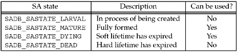
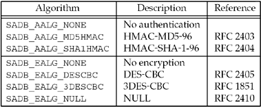

| [ Team LiB ] |
|
19.4 Creating a Static Security Association (SA)The most straightforward method of adding an SA is to send an SADB_ADD message with all parameters filled in, presumably manually specified. Although manual specification of keying material does not lead easily to key changes, which are crucial to avoid cryptanalysis attacks, it is quite easy to configure: Alice and Bob agree on a key and algorithms to use out-of-band, and proceed to use them. We show the steps needed to create and send an SADB_ADD message. The SADB_ADD message requires three extensions: SA, address and key. It can also optionally contain other extensions: lifetime, identity, and sensitivity. We describe the required extensions first. The SA extension is described by the sadb_sa structure, shown in Figure 19.6. Figure 19.6 SA Extension.
struct sadb_sa {
u_int16_t sadb_sa_len; /* length of extension / 8 */
u_int16_t sadb_sa_exttype; /* SADB_EXT_SA */
u_int32_t sadb_sa_spi; /* Security Parameters Index (SPI) */
u_int8_t sadb_sa_replay; /* replay window size, or zero */
u_int8_t sadb_sa_state; /* SA state, see Figure 19.7 */
u_int8_t sadb_sa_auth; /* authentication algorithm, see Figure 19.8 */
u_int8_t sadb_sa_encrypt; /* encryption algorithm, see Figure 19.8 */
u_int32_t sadb_sa_flags; /* bitmask of flags */
};
Figure 19.7. Possible states for SAs. Figure 19.8. Authentication and Encryption algorithms. The sadb_sa_spi field contains the Security Parameters Index, or SPI. This value, combined with the destination address and protocol in use (e.g., IPsec AH), uniquely identifies an SA. When receiving a packet, this value is used to look up the SA for that packet; when sending a packet, this value is inserted into the packet for the other end to use. It has no other meaning, so these values can be allocated sequentially, randomly, or using any method the destination system prefers. The sadb_sa_reply field specifies the window size for replay protection. Since static keying prevents replay protection, we will set this to zero. The sadb_sa_state field varies during the life cycle of a dynamically created SA, using the values in Figure 19.7. However, manually created SAs spend all their time in the SADB_SASTATE_MATURE state. We will see the other states in Section 19.5. The sadb_sa_auth and sadb_sa_encrypt fields specify the authentication and encryption algorithms for this SA. Possible values for these fields are listed in Figure 19.8. There is only one flag value currently defined for the sadb_sa_flags field, SADB_SAFLAGS_PFS. This flag requests perfect forward security, that is, the value of this key must not be dependent on any previous keys or some master key. This flag value is used when requesting keys from a key management application and is not used when adding static associations. The next required extensions for an SADB_ADD command are the addresses. Source and destination addresses, specified with SADB_EXT_ADDRESS_SRC and SADB_EXT_ADDRESS_DST, respectively, are required. A proxy address, specified with SADB_EXT_ADDRESS_PROXY, is optional. For more details on proxy addresses, see RFC 2367 [McDonald, Metz, and Phan 1998]. Addresses are specified using a sadb_address extension, shown in Figure 19.9. The sadb_address_exttype field determines what type of address this extension is supplying. The sadb_address_proto field specifies the IP protocol to be matched for this SA, or 0 to match all protocols. The sadb_address_prefixlen field describes the prefix of the address that is significant. This permits an SA to match more than one address. A sockaddr of the appropriate family (e.g., sockaddr_in, sockaddr_in6) follows the sadb_address structure. The port number in this sockaddr is significant only if the sadb_address_proto specifies a protocol that supports port numbers (e.g., IPPROTO_TCP). Figure 19.9 Address extension.
struct sadb_address {
u_int16_t sadb_address_len; /* length of extension + address / 8 */
u_int16_t sadb_address_exttype; /* SADB_EXT_ADDRESS_{SRC,DST,PROXY} */
u_int8_t sadb_address_proto; /* IP protocol, or 0 for all */
u_int8_t sadb_address_prefixlen; /* # significant bits in address */
u_int16_t sadb_address_reserved; /* reserved for extension */
};
/* followed by appropriate sockaddr */
The final required extensions for the SADB_ADD message are the authentication and encryption keys, specified with the SADB_EXT_KEY_AUTH and SADB_EXT_KEY_ ENCRYPT extensions, which are represented by a sadb_key structure (Figure 19.10). The key extension is very straightforward; the sadb_key_exttype member defines whether it is an authentication or encryption key, the sadb_key_bits member specifies the number of bits in the key, and the key itself follows the sadb_key structure. Figure 19.10 Key extension.
struct sadb_key {
u_int16_t sadb_key_len; /* length of extension + key / 8 */
u_int16_t sadb_key_exttype; /* SADB_EXT_KEY_{AUTH, ENCRYPT} */
u_int16_t sadb_key_bits; /* # bits in key */
u_int16_t sadb_key_reserved; /* reserved for extension */
};
/* followed by key data */
Figure 19.11 Program to issue SADB_ADD command on key management socket.key/add.c
33 void
34 sadb_add(struct sockaddr *src, struct sockaddr *dst, int type, int alg,
35 int spi, int keybits, unsigned char *keydata)
36 {
37 int s;
38 char buf[4096], *p; /* XXX */
39 struct sadb_msg *msg;
40 struct sadb_sa *saext;
41 struct sadb_address *addrext;
42 struct sadb_key *keyext;
43 int len;
44 int mypid;
45 s = Socket(PF_KEY, SOCK_RAW, PF_KEY_V2);
46 mypid = getpid();
47 /* Build and write SADB_ADD request */
48 bzero(&buf, sizeof(buf));
49 p = buf;
50 msg = (struct sadb_msg *) p;
51 msg->sadb_msg_version = PF_KEY_V2;
52 msg->sadb_msg_type = SADB_ADD;
53 msg->sadb_msg_satype = type;
54 msg->sadb_msg_pid = getpid();
55 len = sizeof(*msg);
56 p += sizeof(*msg);
57 saext = (struct sadb_sa *) p;
58 saext->sadb_sa_len = sizeof(*saext) / 8;
59 saext->sadb_sa_exttype = SADB_EXT_SA;
60 saext->sadb_sa_spi = htonl(spi);
61 saext->sadb_sa_replay = 0; /* no replay protection with static keys */
62 saext->sadb_sa_state = SADB_SASTATE_MATURE;
63 saext->sadb_sa_auth = alg;
64 saext->sadb_sa_encrypt = SADB_EALG_NONE;
65 saext->sadb_sa_flags = 0;
66 len += saext->sadb_sa_len * 8;
67 p += saext->sadb_sa_len * 8;
68 addrext = (struct sadb_address *) p;
69 addrext->sadb_address_len = (sizeof(*addrext) + salen(src) + 7) / 8;
70 addrext->sadb_address_exttype = SADB_EXT_ADDRESS_SRC;
71 addrext->sadb_address_proto = 0; /* any protocol */
72 addrext->sadb_address_prefixlen = prefix_all(src);
73 addrext->sadb_address_reserved = 0;
74 memcpy(addrext + 1, src, salen(src));
75 len += addrext->sadb_address_len * 8;
76 p += addrext->sadb_address_len * 8;
77 addrext = (struct sadb_address *) p;
78 addrext->sadb_address_len = (sizeof(*addrext) + salen(dst) + 7) / 8;
79 addrext->sadb_address_exttype = SADB_EXT_ADDRESS_DST;
80 addrext->sadb_address_proto = 0; /* any protocol */
81 addrext->sadb_address_prefixlen = prefix_all(dst);
82 addrext->sadb_address_reserved = 0;
83 memcpy(addrext + 1, dst, salen(dst));
84 len += addrext->sadb_address_len * 8;
85 p += addrext->sadb_address_len * 8;
86 keyext = (struct sadb_key *) p;
87 /* "+7" handles alignment requirements */
88 keyext->sadb_key_len = (sizeof(*keyext) + (keybits / 8) + 7) / 8;
89 keyext->sadb_key_exttype = SADB_EXT_KEY_AUTH;
90 keyext->sadb_key_bits = keybits;
91 keyext->sadb_key_reserved = 0;
92 memcpy(keyext + 1, keydata, keybits / 8);
93 len += keyext->sadb_key_len * 8;
94 p += keyext->sadb_key_len * 8;
95 msg->sadb_msg_len = len / 8;
96 printf("Sending add message:\n");
97 print_sadb_msg(buf, len);
98 Write(s, buf, len);
99 printf("\nReply returned:\n");
100 /* Read and print SADB_ADD reply, discarding any others */
101 for ( ; ; ) {
102 int msglen;
103 struct sadb_msg *msgp;
104 msglen = Read(s, &buf, sizeof(buf));
105 msgp = (struct sadb_msg *) &buf;
106 if (msgp->sadb_msg_pid == mypid && msgp->sadb_msg_type == SADB_ADD) {
107 print_sadb_msg(msgp, msglen);
108 break;
109 }
110 }
111 close(s);
112 }
We show our program to add a static SADB entry in Figure 19.11. Open PF_KEY socket and save PID55–56 As before, we open a PF_KEY socket and save our PID for later. Build common message header47–56 We build the common message header for the SADB_ADD message. We don't set the sadb_msg_len element until just before writing the message since it must reflect the entire length of the message. The len variable keeps a running length of the message, and the p pointer always points to the first unused byte in the buffer. Append SA extension57–67 Next, we add the required SA extension (Figure 19.6). The sadb_sa_spi field must be in network byte order, so we call htonl on the host order value that was passed to the function. We turn off replay protection and set the SA state (Figure 19.7) to SADB_SASTATE_MATURE. We set the authentication algorithm to the algorithm value specified on the command line, and specify no encryption with SADB_EALG_NONE. Append source address68–76 We add the source address to the message as an SADB_EXT_ADDRESS_SRC extension. We set the protocol to 0, meaning that this association applies to all protocols. We set the prefix length to the appropriate length for the IP version, that is, 32 bits for IPv4 and 128 bits for IPv6. The calculation of the length field adds 7 before dividing by 8, which ensures that the length reflects the padding required to pad out to a 64-bit boundary as required for all PF_KEY extensions. The sockaddr is copied after the extension header. Append destination address77–85 The destination address is added as an SADB_EXT_ADDRESS_DST extension in exactly the same way as the source address. Append key86–94 We add the authentication key to the message as an SADB_EXT_KEY_AUTH extension. We calculate the length field the same way as for the addresses, to add the required padding for the variable-length key. We set the number of bits and copy the key data to follow the extension header. Write message95–98 We print out the message with our print_sadb_msg function, and write it to the socket. Read reply99–111 We read messages from the socket until we receive one that is addressed to our PID and is an SADB_ADD message. We then print that message with the print_sadb_msg function and exit. ExampleWe run our program to send an SADB_ADD message for traffic between 127.0.0.1 and 127.0.0.1; in other words, on the local system.
macosx % add 127.0.0.1 127.0.0.1 HMAC-SHA-1-96 160 \
0123456789abcdef0123456789abcdef01234567
Sending add message:
SADB Message Add, errno 0, satype IPsec AH, seq 0, pid 6246
SA: SPI=39030 Replay Window=0 State=Mature
Authentication Algorithm: HMAC-SHA-1
Encryption Algorithm: None
Source address: 127.0.0.1/32
Dest address: 127.0.0.1/32
Authentication key, 160 bits: 0x0123456789abcdef0123456789abcdef01234567
Reply returned:
SADB Message Add, errno 0, satype IPsec AH, seq 0, pid 6246
SA: SPI=39030 Replay Window=0 State=Mature
Authentication Algorithm: HMAC-SHA-1
Encryption Algorithm: None
Source address: 127.0.0.1/32
Dest address: 127.0.0.1/32
Note that the reply echoes the request without the key. This is because the reply is sent to all PF_KEY sockets, but different PF_KEY sockets may belong to sockets in different protection domains, and keying data should not cross protection domains. After adding the SA to the database, we ping 127.0.0.1 to cause the SA to be used, then dump the database to see what was added.
macosx % dump
Sending dump message:
SADB Message Dump, errno 0, satype Unspecified, seq 0, pid 6283
Messages returned:
SADB Message Dump, errno 0, satype IPsec AH, seq 0, pid 6283
SA: SPI=39030 Replay Window=0 State=Mature
Authentication Algorithm: HMAC-SHA-1
Encryption Algorithm: None
[unknown extension 19]
Current lifetime:
36 allocations, 0 bytes
added at Thu Jun 5 21:01:31 2003, first used at Thu Jun 5 21:15:07 2003
Source address: 127.0.0.1/128 (IP proto 255)
Dest address: 127.0.0.1/128 (IP proto 255)
Authentication key, 160 bits: 0x0123456789abcdef0123456789abcdef01234567
We see from this dump that the kernel has changed our IP protocol zero to 255. This is an artifact of this implementation, not a general property of PF_KEY sockets. In addition, we see that the kernel changed the prefix length from 32 to 128. This appears to be a confusing issue between IPv4 and IPv6 within the kernel. The kernel returns an extension (numbered 19) that our dump program doesn't understand. Unknown extensions are skipped using the length field. A lifetime extension (Figure 19.12) is returned containing the current lifetime information of the SA. Figure 19.12 Lifetime extension.
struct sadb_lifetime {
u_int16_t sadb_lifetime_len; /* length of extension / 8 */
u_int16_t sadb_lifetime_exttype; /* SADB_EXT_LIFETIME_{SOFT, HARD, CURRENT} */
u_int32_t sadb_lifetime_allocations; /* # connections, endpoints, or flows */
u_int64_t sadb_lifetime_bytes; /* # bytes */
u_int64_t sadb_lifetime_addtime; /* time of creation, or time from
creation to expiration */
u_int64_t sadb_lifetime_usetime; /* time first used, or time from
first use to expiration */
};
There are three different lifetime extensions. The SADB_LIFETIME_SOFT and SADB_LIFETIME_HARD extensions specify soft and hard lifetimes for an SA, respectively. The kernel sends an SADB_EXPIRE message when the soft lifetime has been reached; the SA will not be used after its hard lifetime has been reached. The SADB_LIFETIME_CURRENT extension is returned in SADB_DUMP, SADB_EXPIRE, and SADB_GET responses to describe the values for the current association. |
| [ Team LiB ] |
|